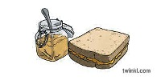

| Paddington | Gare | Praed St | |
| London W2 1HQ | |||
| Site Web |  | ||
| Film | Henry Brown | ||
| Mary Brown | |||
| Paddington |
| Paddington | Londres | plateforme 9 3/4 | trains | |
| Henry Brown | époux | capable de s'ouvrir | ||
| Mary Brown | épouse | gentille et ouverte d'esprit | ||
| La reine | Humour | Corgis | Fell Pony | Marmelade |